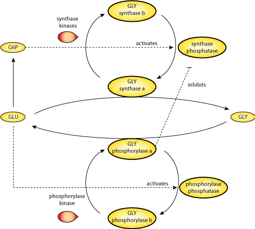

This CellML model runs in OpenCell and COR to reproduce Figures
The glucose-induced switch between glycogen phosphorylase and glycogen synthase in the liver is investigated by means of a theoretical approach based on a minimal, bicyclic cascade model involving the reversible phosphorylation of the two enzymes. The aim of the analysis is to evaluate the contribution of different factors to the sequential changes in the activity of glycogen phosphorylase and glycogen synthase observed following the addition of suprathreshold amounts of glucose.
The original paper reference is cited below:
The Glucose-induced Switch Between Glycogen Phosphorylase and Glycogen Synthase in the Liver: Outlines of a Theoretical Approach, Maris Luz Cardenas, Albert Goldbeter, 1996 Journal of Theoretical Biology, 182, 421-426. PubMed ID: 14871603
|  |
| Diagram depicting model. GLY phosphorylase a and GLY synthase a are clickable in the session file. |